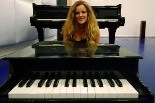

“The piano is a monster that screams when you touch its teeth”
Pianist Anne Veinberg is an active soloist, improvisor and chamber and larger ensemble player. She performs throughout Europe and Australia and has appeared at festivals such as Sonorities Festival (IR), La Escucha Errante (SP), Live.code.festival (DE), Atlas Festival (NL), Interactive Keyboard Symposium (UK), Bimhuis 'Monday Match' (NL), Ustvolskaya Festival (NL), Grachtenfestival (NL), Trance Festival (NL), Uitmarkt (NL), Klangspuren (AU), Henley Festival (UK) and Composers Festival (NL) amongst others.
Classically trained, Anne studied at the Sydney Conservatorium High School with Daniel Herskovitch, obtained her Bachelor in Music with first class honours from the University of Melbourne, where she held a full fee faculty merit scholarship and studied with Ronald Farren Price, and completed her Master of Music at the Conservatory of Amsterdam with David Kuyken.
Anne was keyboard finalist in the ABC Young Performers Award 2008, winner of the Grachten Festival Conservatory Concours 2009, semi-finalist in the 2011 Gaudeamus Interpreters Prize, finalist in the Linkprijs and prizewinner at the Stockhausen Courses Festival in 2013. She has been supported by the Australian Council for the Arts, the J Vonks Fond, Australian Music Foundation, the Donovan Johnson Scholarship, FW Homeward Memorial Scholarship.
With her keen interest in contemporary music, Anne regularly collaborates with composers and has premiered works by Felipe Ignacio Noriega (MEX), Andys Skordis (GR), Michael Young (UK), Anthony Leigh Dunstan (AUS), Charlie Sdraulig (AUS), Marcel Weirckx (NL/CAN), Jos Zwaanenburg (NL) and many others. She is particularly interested in exploring works for piano and live electronics/live coding and the more theatrical contemporary piano repertoire. As a collaborative pianist, Anne has casually worked with many ensembles including Lunapark, Atlas Ensemble, Nieuw Ensemble and is a member of Duo Kolthof/Veinberg, Duo Neshome, Duo H|A, Ensemble SCALA (microtonal music) and Off<>zz (livecode/piano).
Download this biography (PDF)
Download de Nederlandse biografie (PDF)